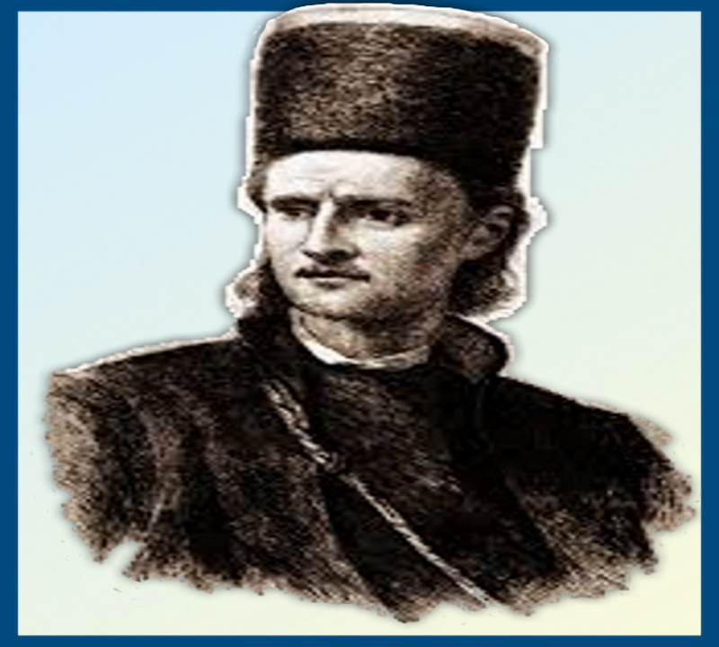

Concursul “Tudor Vladimirescu 200” este un concurs de creație literară organizat de Colegiul Militar Național “Tudor Vladimirescu” din Craiova cu ocazia împlinirii a 200 de ani de la Revoluția condusă de Tudor Vladimirescu. La 20 martie 1821, cu o zi înainte ca armata de panduri să intre în București, Tudor a dat o a treia proclamaţie, făcând un apel direct la solidaritatea tuturor locuitorilor ţării, indiferent de condiţia lor socială, pentru a lucra „cu toţii dimpreună obşteasca fericire, făr' de care norocire în parte nu poate fi (…) Să ne unim dar cu toţii, mici şi mari, şi ca nişte fraţi, fii ai uneia maici, să lucrăm cu toţii împreună, fieştecare după destoinicia sa, câştigarea şi naşterea a doua a dreptăţilor noastre” („Istoria militară a poporului român”, Editura Militară, Bucureşti, 1987).
Grupul țintă al acestui eveniment este reprezentat de elevii din colegiile miltare din toată țara : Colegiul Militar Naţional „Dimitrie Cantemir”, Colegiul Militar Naţional “Ștefan cel Mare”, Colegiul Militar Naţional „Mihai Viteazul”, Colegiul Militar Naţional „Tudor Vladimirescu”, Colegiul Militar Naţional „Alexandru Ioan Cuza”. Organizatorii așteaptă un număr cât mai mare de elevi să se înscrie la acest concurs. Perioada de înscriere este februarie-mai 2021, 30 aprilie fiind data până când elevii pot trimite lucrările, iar pe 10 mai lucrările vor fi jurizate și rezultatele vor fi anunțate. Concursul se va desfășura prin participarea indirectă a elevilor și presupune 3 secțiuni: eseu istoric, creație literară (poezie) și creație plastică, toate aceste secțiuni fiind probe individuale.
Așteptăm să vedem rezultatele elevilor participanți!
“Ridicarea lui Tudor fu deșteptarea nației”
-- Nicolae Bălcescu
știre realizată de Popescu Teodor și Marin Ștefan